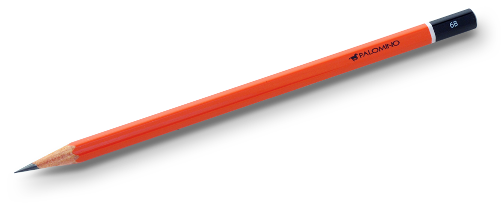

Development of Technologies and Design

1 The Impact of CAD/CAM
Design Process
- The introduction of Computer Aided Design in the 1980’s led to engineers being able to unambiguously create their designs, and share and collaborate ideas far more effectively. Before this, draftsmen were employed to create and duplicate technical drawings in different viewpoints, often taking days to create something which can be achieved in moments using software now. The advantages of using CAD over a manual, hand-drawn sets of plans are as follows:
- Can be more accurate; reduction in human error,
- Additional measurements can be taken in software,
- Different views are available easily without the need for a new drawing,
- Multiple copies can be produced with identical quality,
- CAD software can often simulate moving parts to check for weak points,
- Drawings can be sent to CAM machines for immediate manufacture,
- Changes can be made easily so version control is easier, and
- Electronic documents can be instantly emailed around the World.
- The disadvantages of CAD are:
- Specialist software can be expensive to purchase
- Powerful PC hardware is required to render more advanced models
- Staff need to be trained on the use of the new software
- CAM (short for Computer Aided Manufacture) is the use of software to control machines to manufacture work pieces. We have two CAM machines in the department – a laser cutter and a 3d router, and are investigating getting a 3D printer. CAM is used heavily in the automotive and technology (e.g. mobile ‘phone and computer) sectors, due to their advantage over a traditional human workforce. The main advantages are…
- Machines are typically more precise than humans in their work, able to provide finishes accurate to within microns,
- Machines can work 24/7, requiring no rest or breaks,
- Machines require no wages, nor will they strike or fall ill,
- CAM systems won’t lose concentration, and can be re-programmed to produce different parts at the end of a production run,
- Production speed is usually higher than manual production
- The disadvantages of CAM systems are: -
- Initial startup costs are high
- Extensive training is required to use the equipment
- Can be slower than traditional methods for one-off production
- Methods of working. As a result of the introduction of CAD/CAM, the dynamic of the manufacturing workforce has shifted. Historically, one would expect to see a large number of low-skilled workers assembling parts and products, while a team of engineers and designers developed new ideas that were drawn up by draftsmen. With the advent of CAD/CAM, engineers can create and test their designs in real-time on computers, using software to mathematically prove that their designs will work when fabricated, and to test components before manufacture to identify likely points of failure.
- In terms of methods of production, CAD/CAM replaces the need for factory workers to use jigs and templates to produce parts, as they are automatically cut/formed by CNC machines.
Design Process
- According to the UK Design Council, the major routes and stages within design process can be described as, Discover, Define, Develop and Deliver.
- This could also be expressed more traditionally as Research, Analyse, Design & Develop, Make, Test and Evaluate.
Production Methods
- There are four main types of industrial production methods:
- One-off production is when only one product is made at a time. Every product is different so it is labour intensive. Products may be made by hand or a combination of hand and machine methods.
- Batch production is when a small quantity of identical products are made. Batch production may also be labour intensive, but jigs and templates are used to aid production. Batches of the product can be made as often as required. The machines can be easily changed to produce a batch of a different product.
- Mass production is when hundreds of identical products are made, usually on a production line. Mass production often involves the assembly of a number of sub-assemblies of individual components. Parts may be bought from other companies. There is usually some automation of tasks (eg by using Computer Numerical Control machines) and this enables a smaller number of workers to output more products.
- Continuous flow production is when many thousands of identical products are made. The difference between this and mass production is that the production line is kept running 24 hours a day, seven days a week to maximize production and eliminate the extra costs of starting and stopping the production process. The process is highly automated and few workers are required.
Quality Control and Quality Assurance
- During the manufacturing process, QC And QA are vital to ensure a high-quality end product which is safe, and meets client expectation. In the areas such as aeronautical, automotive and medical industries, getting this right can have life or death implications.
- As a quick guide, QC is like checking from time to time that your goldfish is still alive. With QA, you would also aim to make sure that the filter and pump work correctly, the water is the right temperature and is changed on schedule, and that everyone in the household knows when and how much to feed it.
- Quality Control is where a product is inspected or tested to ensure that it meets the requirements for the specific product. For instance, a car part may need to be made from aluminium, weight 54.5g and measure 3mm x 6mm. If out of 50 parts inspected, 49 match these requirements, but one weighs 55g and is 3mm x 6.5mm, that part would fail its quality control check. Quality Control does not ensure quality – it informs where it is missing.
- Quality Assurance seeks to look more closely at the process of making the product, seeks to find common areas where quality has the potential to slip and looks to address these so that manufactured parts fail less often. This can happen right through the design, development and manufacture stages.
Health and Safety
- Risk assessment in the design and manufacture of products and systems is the process of determining the probability of design flaws or engineering errors relating to a particular product or service affecting the cash flow, reputation, or other aspect of an organization.
- Risk assessments should be designed to help to identify and resolve potential problems before a product is manufactured and sold.
Return to homepage